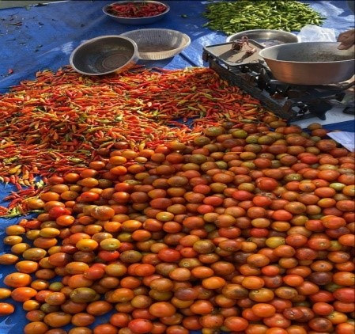
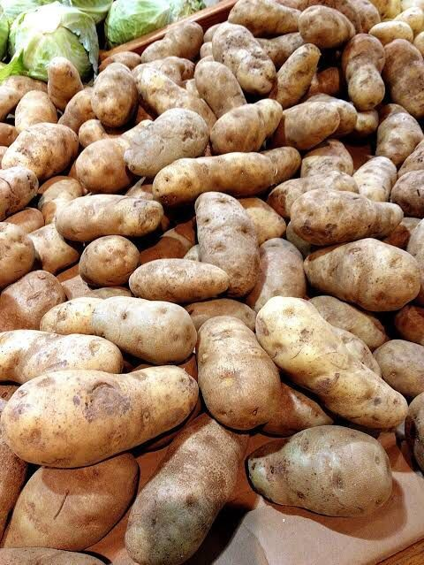
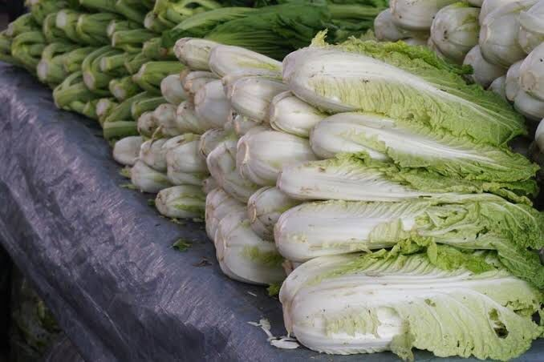
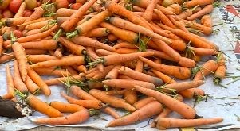
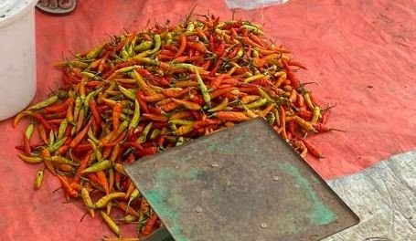

Tomat: Memar dan kebonyokan akibat tekanan dan suhu tinggi.

Kentang: Pembusukan hitam akibat kelembaban berlebih.

Sawi Putih: Sobek dan menguning akibat suhu yang tidak sesuai.

Wortel: Kering dan bercak hitam karena sirkulasi udara buruk.

Cabai: Kekeringan dan perubahan bentuk karena suhu tinggi dan kelembapan rendah.